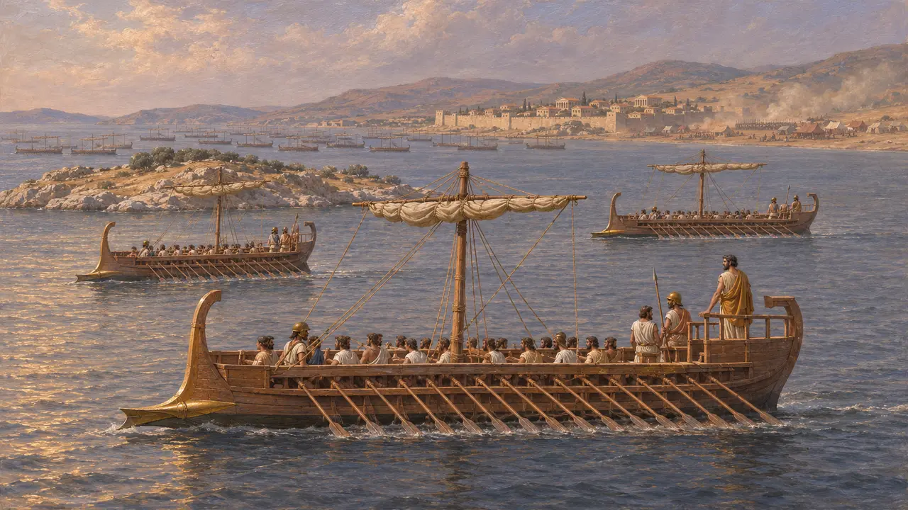
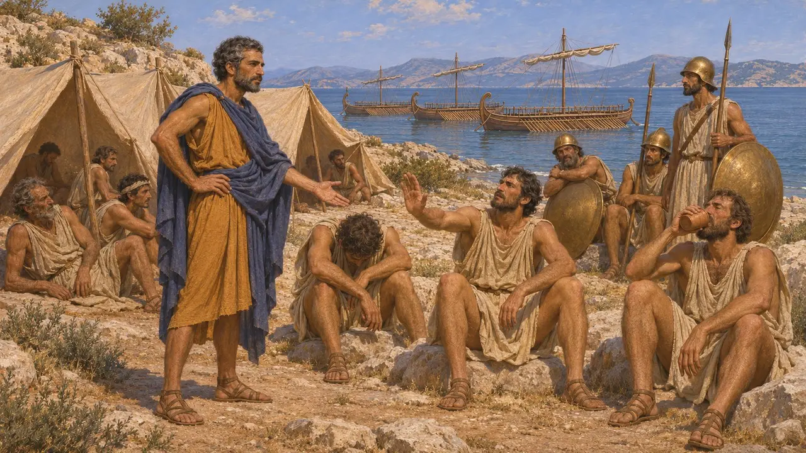
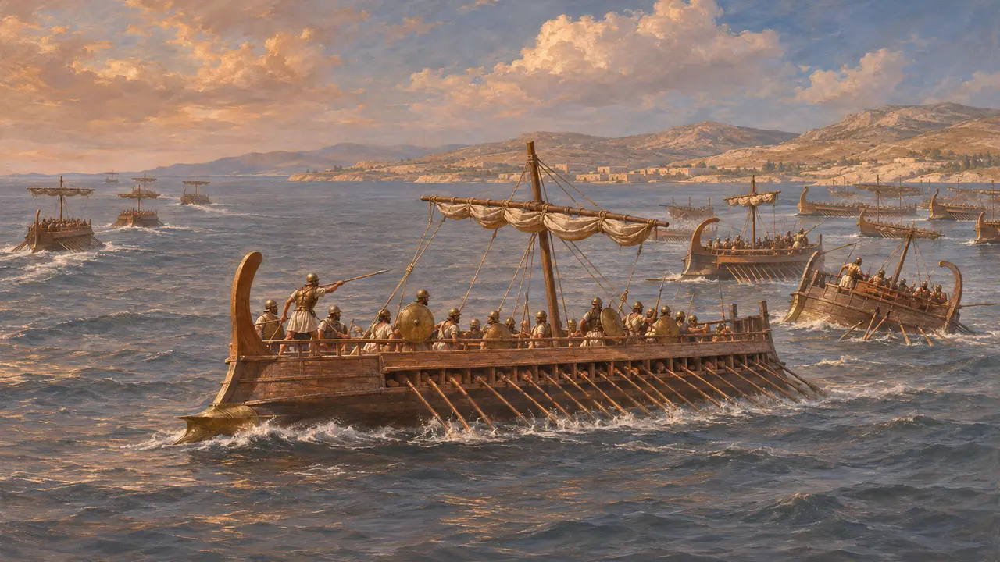
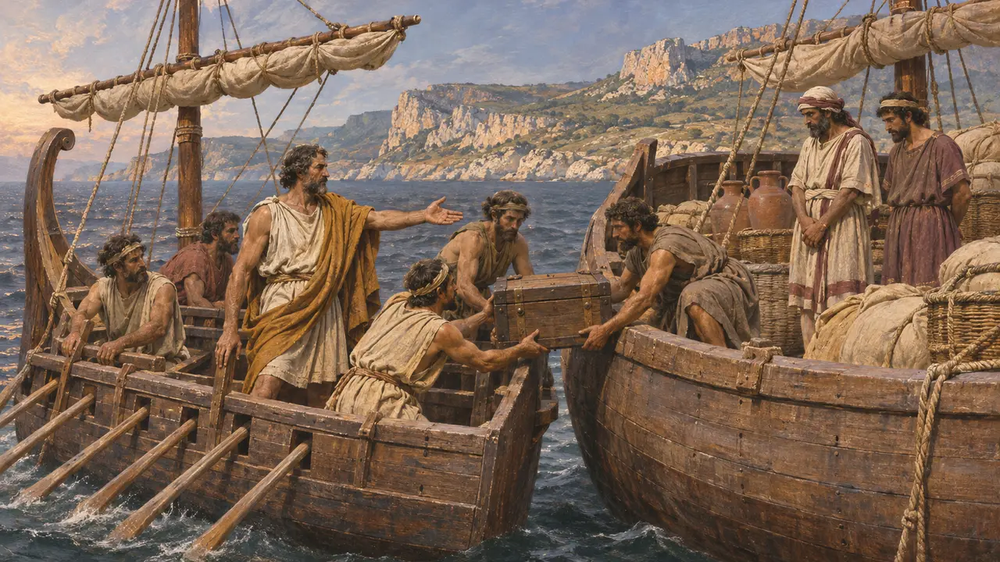
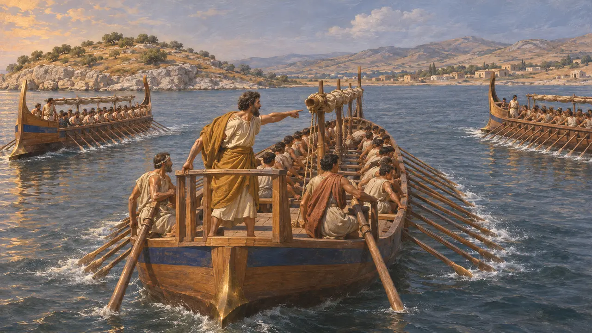

Dionysius of Phocaea
Phocaean general who trained the Ionian fleet before the battle of Lade, 494 BCE
Dionysius was a general from Phocaea, an Ionian Greek city, during the revolt of the Ionians against Darius. Herodotus says he briefly trained the rebel fleet at Lade in 494. After the Ionian defeat he took up raiding at sea. His story is our main picture of how the revolt's last fleet prepared, quarrelled and broke apart.
In the game: The game's chronicle names him as the Ionians' admiral at Lade and follows Herodotus closely. Herodotus, though, describes him drilling the fleet by consent rather than holding a formal supreme command.

A small contingent at Lade
Ancient accountIn 494 the rebel Ionians gathered their ships at the island of Lade, off Miletus, while a Persian army besieged the city by land. Herodotus counts 353 Ionian ships, of which Phocaea, led by Dionysius, sent only three. Against them he sets 600 ships on the King's side, drawn from the Phoenicians, Cypriots, Cilicians and Egyptians. Historians treat both totals with caution.
Herodotus 6.6-9, 6.11

Seven days of drill
Ancient accountHerodotus says Dionysius told the assembled Ionians that their affairs stood on a knife's edge between freedom and slavery, and he offered to train them if they would accept hardship. Each day he led the ships out in column, practised rowing through an enemy line, and kept the marines under arms. After seven days the crews, unused to such labour, complained of heat and exhaustion. They pitched tents on the island and refused to go on.
Herodotus 6.11-12

Desertion and defeat
Ancient accountThe Samian leaders had already been approached through Aeaces, son of Syloson and their former tyrant. Herodotus says that when the fleets met, most Samian ships sailed away, leaving only eleven, and the Lesbians followed them. The Chians fought hard and lost heavily. The Ionian fleet was broken, and Miletus was taken soon afterwards.
Herodotus 6.13-18

Raider of the western seas
Ancient accountHerodotus says Dionysius, seeing the cause lost, captured three enemy ships and did not go home, since he expected Phocaea to be enslaved with the rest of Ionia. He sailed to Phoenicia, sank merchant ships and took much money. He then went to Sicily and raided Carthaginians and Etruscans but never Greeks. Phocaean emigrants who had abandoned their city to Harpagus had fought these same peoples at sea off Corsica about fifty years earlier.
Herodotus 6.17; Herodotus 1.163-167

How far can the story be trusted
DisputedNo Persian document mentions Lade or Dionysius, so everything rests on Herodotus and his Greek informants. Those informants had reasons to blame Ionian softness and to excuse the Samian desertion. Historians debate whether Dionysius held overall command or only led the training. They also debate what the diekplous he drilled actually involved in 494, and some read the seven days of drill as a moral tale.
J. F. Lazenby, 'The diekplous', Greece & Rome 34, 1987; P. Briant, From Cyrus to Alexander, 2002
Sources
- Herodotus 6.6-18
- Herodotus 1.163-167
- J. F. Lazenby, 'The diekplous', Greece & Rome 34, 1987
- O. Murray, 'The Ionian Revolt', Cambridge Ancient History IV, 1988
- P. Briant, From Cyrus to Alexander, 2002